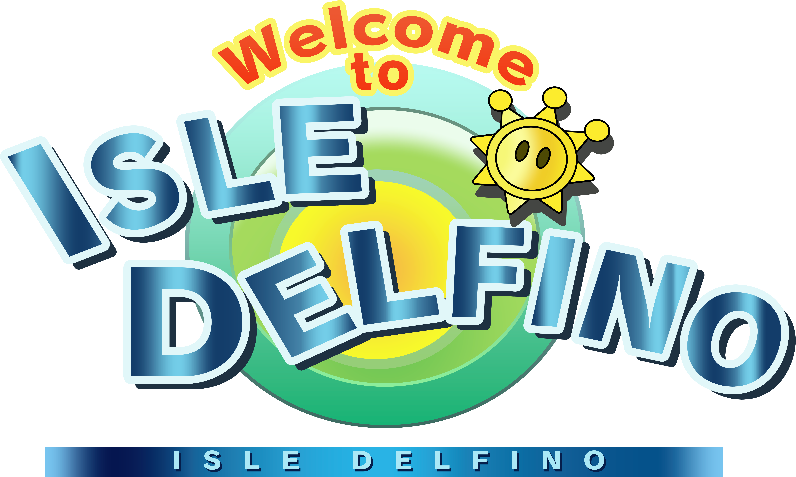

You’ll probably get hungry as you go around exploring the island and engaging in its many activities. If you just need to get some grub, why not take a gander at our many fruit stands scattered around the island. Our fruit is fresh and ripe, gotten from our precious palm trees, and are kept clean. We have many options to choose from, like pineapples, melons, durians, bananas, peppers, and more! Come and stop by for some of the best fruit you’ll ever have.

You must be wondering “With all this water, surely there’s a fish market, right?” Well, you’re in luck, as we just happen to have some of the best fish on this side of the Mushroom Kingdom oceans. Come over to the Ricco Harbor fish market, where we sell and cook high quality catches. These fish were caught fresh from the Delfino oceans with the help of many of our finest vessels. We have plenty of variety, so come on by Ricco Harbor to get a taste of our selection.

You may have seen some melons in your time, but we bet you haven’t seen melons quite like these before. No, these aren’t fake watermelons. These are the actual size of these big juicy fruits. They’re native to the beautiful gelato beach, and they come in a variety of sizes, some even bigger than your whole body. What’s more, you can bring them to our specialty shop where we have our special juicer tailor made to juice up watermelons of these sizes. Bring a melon down here, and we’ll juice it up to a fine smoothy for you. Prefer the melon raw and cut up? You can enjoy it that way, too.